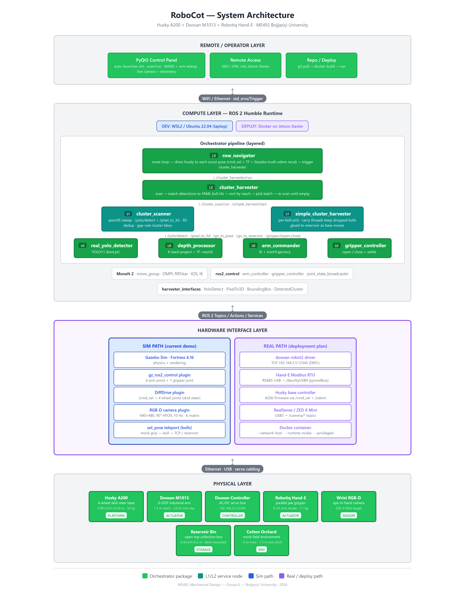
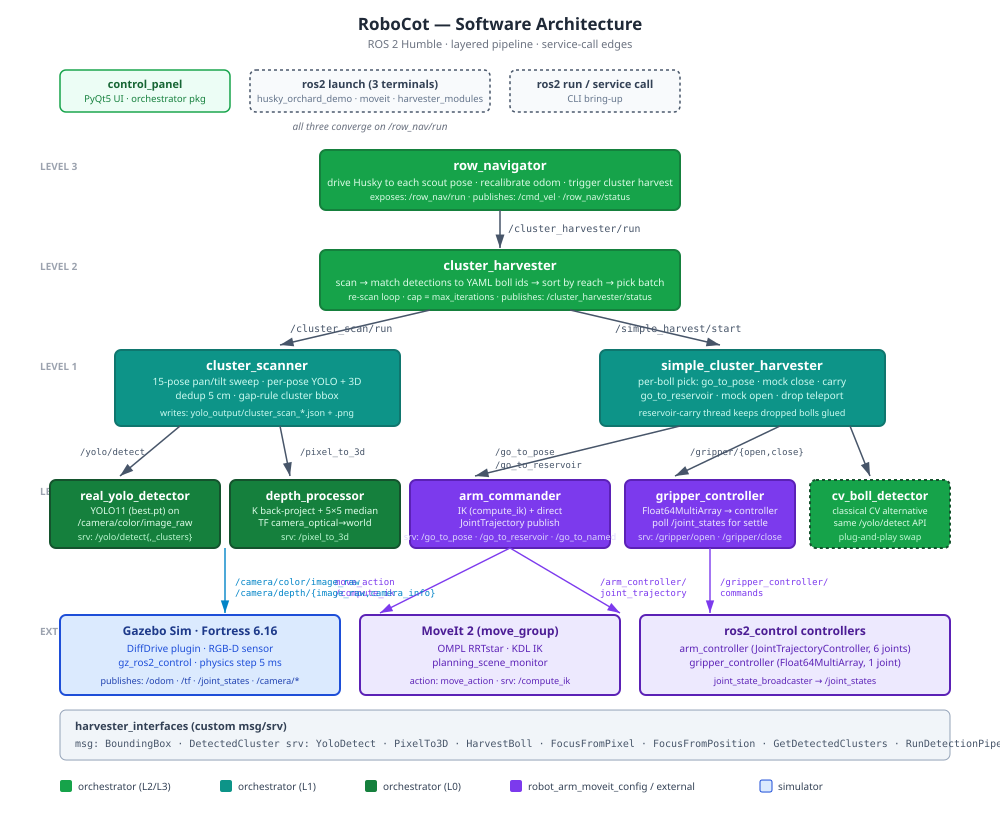
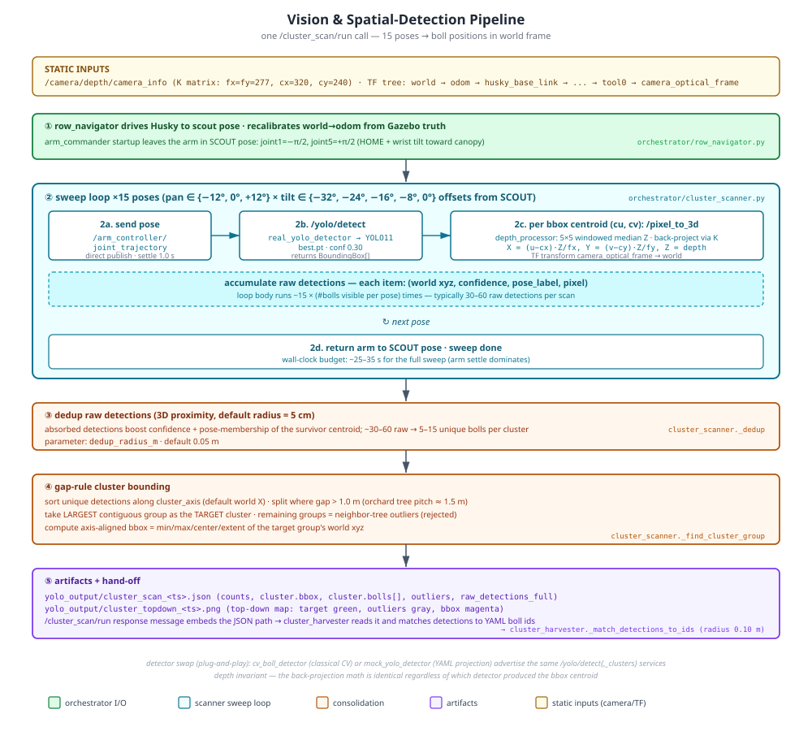
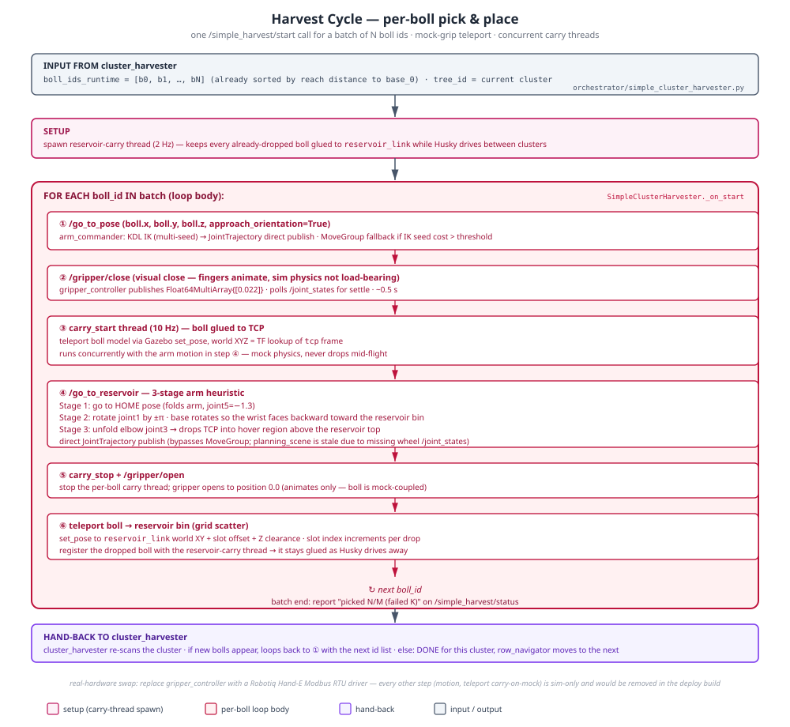

Generated for the ME492 final deliverables. Updated 2026-06-04 for the Husky + M1013 + Hand-E stack with the layered orchestrator pipeline.
SystemArchitecture.jsx

figure_software_architecture.svg

figure_vision_pipeline.svg
/cluster_scan/run

figure_harvest_cycle.svg
/simple_harvest/start
